Blavier’s test is used to find the earth fault location in an underground cable. The two ends faulty cable are mentioned as sending end and far end respectively as shown in fig 1. In this test, the sending end of the cable must be open and isolated and the resistance between sending end and earth point is measured by keeping the far end isolated from earth and then it measured keeping far end of the faulty cable, shorted to the ground. Suppose, we get, resistance values R1 and R2 in these two said measurements respectively. In the fault location, the conductor is shorted to ground, because of fault. Thus, this short circuit may have some resistance that is mentioned as ‘g’.
In Blavier’s test the total line resistance is supposed to be mentioned as ‘L’. The resistance between the sending end to the fault end is mentioned as ‘x’ and the resistance between the fault end to the far end is denoted as ‘y’.
So, the total resistance ‘L’ is equals to the addition of ‘x’ and ‘y’ resistances.
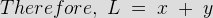
Now, the total resistance of the ‘x’ and ‘g’ loop is nothing but ‘R1’ – the conductor resistance between sending end and earth by keeping far end open.
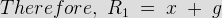
The total resistance of the entire loop of the above circuit is nothing but R2 – the conductor resistance between sending end and earth by keeping far end earthed.
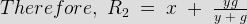
By solving the above three equation and eliminating g and y;
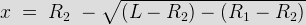
This expression gives the resistance from the sending end to the fault location. The corresponding distance is calculated by known resistance per unit length of the cable. A practical difficulty in Blavier's test is that the resistance to ground ‘g’ is variable, being influenced by the amount of moisture present in the cable and the action of the current at the fault condition. Also, the resistance ‘g’ may be so high that it exerts very little shunting action when y is placed in parallel with it by grounding the far end of the line.
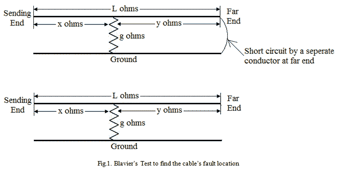
Murray Loop Test
This test is used to find the fault location in an underground cable by making one Wheatstone bridge in it and by comparing the resistance we shall find out the fault location. But we should use the known length of the cables in this experiment. The necessary connection of the Murray loop test is shown in figure 2 & 3. The figure 2 shows that the circuit connection for finding the fault location when the ground fault occurs and the figure 3 shows that the circuit connections for finding the fault location when the short circuit fault occurs.
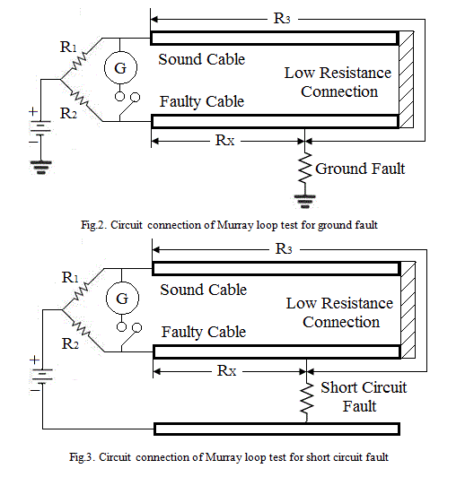
In this test, the faulty cable is connected with sound cable by a low resistance wire, because that resistance should not affect the total resistance of the cable and it should be able to circulate the loop current to the bridge circuits without loss.
The variable resistors R1 and R2 are forming the ratio arms. Balance of the bridge is achieved by adjusting the variable resistors. ‘G’ is the galvanometer to indicate the balance. [R3 + RX] is the total loop resistance formed by the sound cable and the faulty cable. At the balance condition,
")
When the cross section area of the both sound cable and faulty cable are equal, then the resistance of the conductors are directly proportional to their lengths. So, if LX represents the length between test end to the fault end of the faulty cable and if L represents the total length of the both cables, then the expression for LX is as follows;
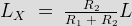
The above test is only valid when the lengths of the cables are known. In Murray Loop Test, the fault resistance is fixed and it may not be varied. Also it is difficult to set the bridge as balance. Thus, the determination of the fault position is not accurate. Then the current circulation through the cable would cause temperature rises due to high voltage or high current. If the resistance varies according to the temperature, then the balance collapses. So, we need to apply less voltage or less current to this circuit.
Varley Loop Test
This test is used to find the fault location in an underground cable by making one Wheatstone bridge in it and by comparing the resistance we shall find out the fault location instead of calculating it from the known lengths of the cable. The necessary connection of the Varley loop test is shown in figure 4 & 5. The figure 4 shows that the circuit connection for finding the fault location when the ground fault occurs and the figure 5 shows that the circuit connections for finding the fault location when the short circuit fault occurs.
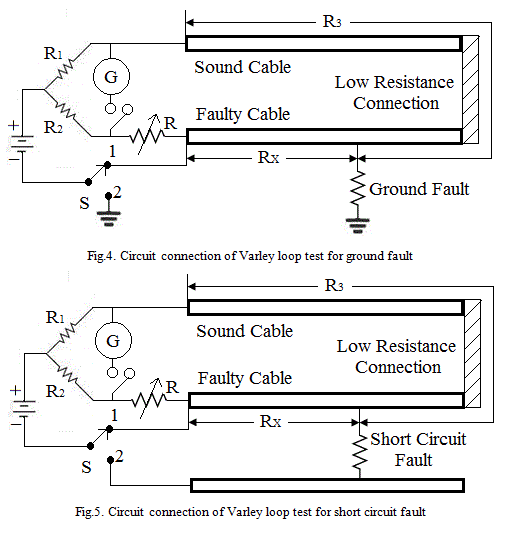
In this test, the faulty cable is connected with sound cable by a low resistance wire, because that resistance should not affect the total resistance of the cable and it should be able to circulate the loop current to the bridge circuits without loss. A single pole double through switch ‘S’ is used in this circuit. There would be a variable resistor ‘R’ which is used to balance the bridge circuit during the working period.
If the switch ‘S’ is in position 1, then we need to adjust the variable resistance ‘R’ to balance the circuit. Let us assume that the present ‘R’ value as ‘RS1’. At this position, the expressions are as follows;
")
This expression gives the value of [R3 + RX], if the value of R1, R2 and RS1 are known.
If the switch ‘S’ is in position 2, then again we need to adjust the variable resistance ‘R’ to balance the bridge circuit. Let us assume that the new ‘R’ value as ‘RS2’. At this position, the expressions are as follows;
")
By solving the equation (1) and (2),
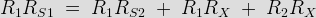
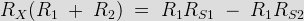
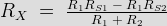
Therefore, the unknown resistance RX is,
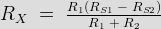
Varley Loop Test is valid only when the cable sections are uniform throughout the loop. The current flowing through the cable would cause the temperature effect. Due to this temperature effect, the resistance of the cable would change. Thus, we need to apply less current to this circuit to carry out the experiment.
Fisher Loop Test
In this Fisher Loop Test, there must be two healthy sound cables which must have the same length and same cross sectional area as the faulty cable. As per the Fig.6 & 7 circuit diagram, all the three cables are connected by a low resistance wire.
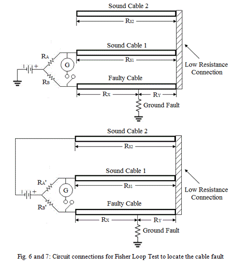
In the Fig.6 circuit connection, the bridge connection is connected to ground. Now, the bridge arms are RA, RB, RX and [RS1 + RY]. In the Fig.7 circuit connection, the bridge connection is connected to ‘Sound Cable 2’.
Now, the bridge arms are RA', RB', RS2 and [RX + RY]. Here [RS1 = RS2]. Two balancing are necessary as per the two different circuits. Let, for the first balance, the expressions are as follows;
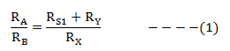
For the second balance, the expressions are as follows;
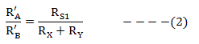
From the expression (1) and (2),
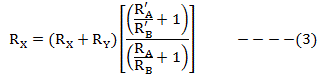
In this two circuits, if the bridge arm resistors are equal (or) if [(RA + RB) = (RA' + RB')], then the expression (3) can be modified as,
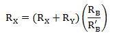
So, when the resistance per unit length of the conductor is uniform in all conditions, then the fault location LX is as follows;
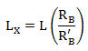
Here ‘L’ if the total length of the faulty cable. But practically, this is not possible. There would be fractional changes in the bridge arms. Thus, the fault location LX is as follows;
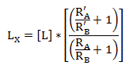
This is about the working principle of “Fisher Loop Test”.
 by
by